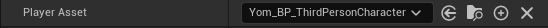
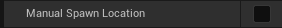
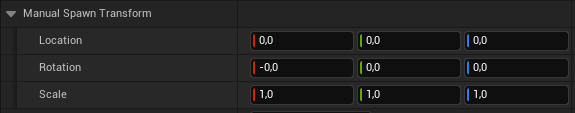
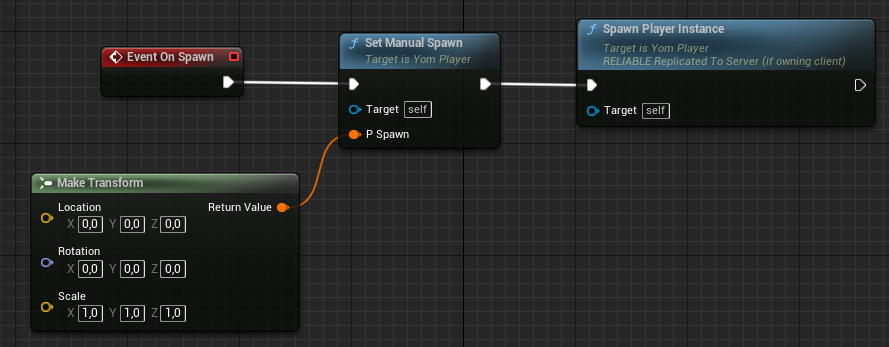
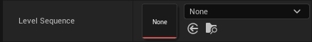
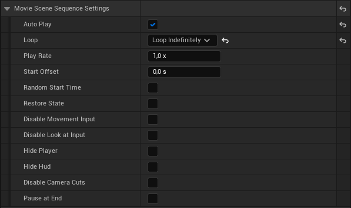
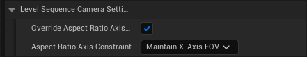

- Generated by
 1.9.5
1.9.5
|
YOM Replicator SDK 0.6.0.4
A metaverse SDK created by YOM
|
There are more settings for a player besides the settings which are set in the Setup Window. This page will list all of the additional settings that can be adjusted. The extra settings can be accessed by opening the blueprint of your MetaspacePlayer. In the details section, there will be a tab called Yom Player, which will include all settings listed below.

The Player Asset setting was set in the setup window, but can also be changed here if needed.

The Manual Spawn Location setting allows creators to define their own manual spawning location. If you would like a fixed location you should set this to true and set a location in Manual Spawn Transform.

If you want to have dynamic spawning behavior you will need to implement the OnSpawn event in a blueprint graph. The graph should start with Event On Spawn and call Set Manual Spawn and Spawn Player Instance (both are functions of self), which will set the spawn point and spawn the player. An example of such a graph can be found below:


The Level Sequence setting allows a creator to set a Virtual Camera for a player if the player accessed the metaspace without a wallet. This can also be seen as a preview of the level. A video on how to create a sequence can be found here, but there are also many other guides on this topic.
Furthermore, you can set the settings of the LevelSequence in the Movie Scene Sequence Settings and in the Level Sequence Camera Settings:

